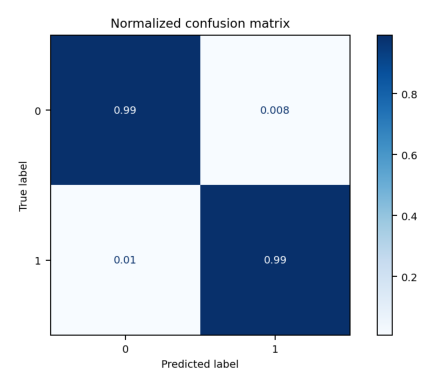
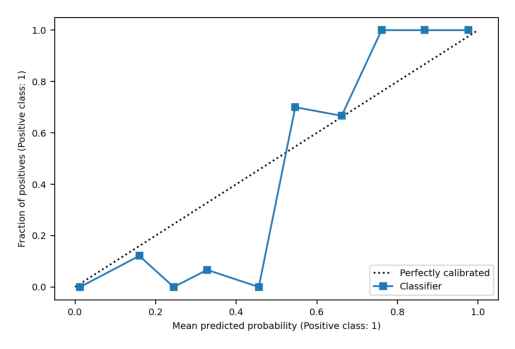
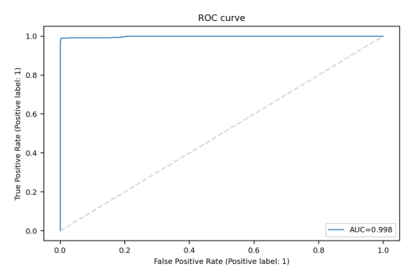
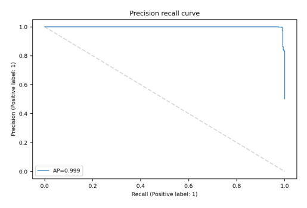
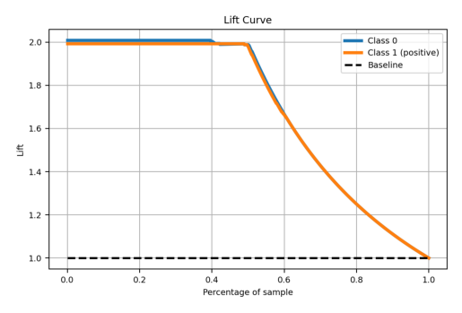

# Import numerical processing
import pandas as pd
import numpy as np
import os
# Import mlflow
import mlflow
import mlflow.sklearn
from mlflow.models import infer_signature
# Import machine learning
from sklearn.ensemble import RandomForestClassifier, GradientBoostingClassifier
from sklearn.linear_model import LogisticRegression
from sklearn.svm import SVC
from sklearn.model_selection import train_test_split
from sklearn.compose import make_column_transformer
from sklearn.pipeline import Pipeline
from sklearn.preprocessing import OneHotEncoder, StandardScaler
from sklearn.metrics import precision_score, recall_score, f1_score, accuracy_scoreThis is Part 3 of 4 in a project to build an explainable machine learning model to predict Netflix customer churn.
- Part 1: Motivation
- Part 2: Data Understanding & EDA Insights
- Part 3: Modeling Strategy & Experiments
- Part 4: Model Interpretation & Insights
Overview
In this section, we approach the modeling strategy and experiments as follows:
- Setup logging for our model experiments with
mlflow(a popular MLOps framework for reproducible experiments and model lifecycle management) - Apply train/test split to maintain a hold-out data set for validation
- Evaluate baseline models across four machine learning model types using
scikit-learn - Summarize the results and discuss performance trade-offs
- Examine key artifacts for the selected model
These steps allow us to organize our experiments for reproducibility with models logged and ready for production. Additionally, starting with baseline models follows the concept of parsimony, giving us a point of reference to determine if more complex and resource-intensive models are required.
Imports and data load
# Load the data
project_path = os.getcwd()
df = pd.read_csv(project_path + "/Data/netflix_customer_churn.csv")To prepare the data for modeling, we follow the same numerical and categorical delineation we identified during EDA. Additionally, we need to change data types to be float (for numerical features) and string (for categorical features) to ensure compatibility with mlflow’s strict enforcement of model signatures/schema.
# Clean the data with expedience and for mlflow compatibility
# Create column name lists for reference
numerical_features = ['age', 'watch_hours', 'last_login_days', 'avg_watch_time_per_day']
categorical_features = ['gender', 'subscription_type', 'region', 'device', 'payment_method', 'favorite_genre', 'monthly_fee', 'number_of_profiles']
target = ['churned']
# Make all categoricals of string data type
for category in categorical_features:
df[category] = df[category].astype("string")
# Make all numerical of float data type (be wary of precision loss for large integers)
for numerical in numerical_features:
df[numerical] = df[numerical].astype("float")
# Make target of float data type (be wary of precision loss for large integers)
#df[target] = df[target].astype("float")
# Drop customer_id
try:
df = df.drop("customer_id", axis=1)
except KeyError:
print("Already dropped customer_id")Baseline model comparison in mlflow
To enable tracking our model expriments in mlflow, we first setup a connection to our local server session. This can be setup with a local installation of mlflow and running mlflow ui from the command line.
Alternatively for MLOps in the cloud, we could point to a MLflow Tracking Server hosted through any cloud platform provider, such as Databricks.
Once the connection is established, we setup an experiment specific to our prediction use case so that all model experiment details (ie. metrics, models, artifacts, etc.) can be tracked and organized under this experiment.
Setup session
# Connect MLflow session to local server
mlflow.set_tracking_uri("http://127.0.0.1:5000")Setup experiment
# Run a test experiment
mlflow.set_experiment("Netflix Churn Prediction")
with mlflow.start_run():
mlflow.log_metric("foo", 1)
mlflow.log_metric("bar", 2)🏃 View run dapper-turtle-416 at: http://127.0.0.1:5000/#/experiments/888675540034408296/runs/f50542b4fc67475fa325780ed9184b60
🧪 View experiment at: http://127.0.0.1:5000/#/experiments/888675540034408296Split the data
We will apply a standard 80/20 split of our data between training and testing.
For more effective hyperparameter tuning and model selection, we could further apply cross-validation on the training data during the experimentation process. The test set would then be set aside for an unbiased final validation against candidate models retrained against the entire training set. However we proceed without due to the high performance of baseline models, removing the need for additional hyperparameter tuning.
# Split into 80% training and 20% testing
train_df, test_df = train_test_split(df, test_size=0.2, random_state=42)
train_df.shape, test_df.shape((4000, 13), (1000, 13))# Separate the target column for the training set
train_dataset = mlflow.data.from_pandas(train_df, name="train")
X_train = train_dataset.df.drop(["churned"], axis=1)
y_train = train_dataset.df[["churned"]].values.ravel()
X_train.shape, y_train.shape((4000, 12), (4000,))# Separate the target column for the testing set
test_dataset = mlflow.data.from_pandas(test_df, name="test")
X_test = test_dataset.df.drop(["churned"], axis=1)
y_test = test_dataset.df[["churned"]].values.ravel()
X_test.shape, y_test.shape((1000, 12), (1000,))Define models
While not exhaustive in our model search, we define four representative models that are suitable for binary classification with distinct strengths and weaknesses. We outline a high level discussion of these below:
| Model Type | Description | Strengths | Weaknesses |
|---|---|---|---|
| Logistic Regression | Linear model estimating probability of an instance belonging to a particular class | Highly interpretable (through odds ratios) and computationally efficient | Assumes linearity between features and log-odds of outcome, less robust against non-linear relationships and outliers |
| Support Vector Machines (SVC) | Model that finds optimal hyperplane to seperate data points and maximize the margin between them | Robust in high-dimensional spaces and handles non-linear relationships using kernel tricks | Computationally expensive for large datasets, requires feature scaling, and less interpretable than linear models |
| Random Forest | Tree-based ensemble model that uses multiple decision trees trained on bootstrapped samples and random subset of features. Predictions are then aggregated | Reduces overfitting versus decision trees and robust to high-dimensional data and outliers | Less interpretable than decision trees |
| Gradient Boosting | Tree-based ensemble model that builds trees sequentially with each tree correcting errors (missclassified instances) of the previous one (other implementations include XGBoost and LightGBM) | High accuracy and performance especially on complex datasets | Prone to overfitting if not properly regularized and less interpretable than random forest |
While our classes are balanced in our dataset (both churned and not churned classes samples are similar), we will assess the models across the following metrics for completeness. Briefly:
- Accuracy: Total correct predictions / Total predictions
- Precision: Total true positives / All positive predictions
- Recall: Total true positives / All actual positives
- F1 Score: Balanced score representing harmonic mean of precision and recall
- ROC AUC: Summary metric quantifying the Area Under the (ROC) Curve; the ROC curve plots the true positive rate and false positive rate across different classification thresholds
Accuracy and ROC AUC are most approrpiate given the balanced nature of our dataset, but for imbalanced datasets we would want to put more emphasis on Precision, Recall, and F1 Score. Additionally, the Precision-Recall Curve and it’s associated AUC would be preferable over the ROC AUC for imbalanced datasets.
For imbalanced datasets, a model with high accuracy overall could still yield poor performance for minority classes, making it a misleading metric. In this case, precision and recall provide a more useful measure for minority class prediction performance. For example, use:
- precision if false positive cost is high (ie. did we predict the positive class correctly),
- recall if false negative cost is high (ie. did we capture all of the positive class in our predictions), and
- F1 score if a balanced view on both is best.
# Define models to compare
sklearn_models = {
"logistic_regression": LogisticRegression(random_state=42, max_iter=1000),
"svm": SVC(probability=True, random_state=42),
"random_forest": RandomForestClassifier(n_estimators=100, random_state=42),
"gradient_boosting": GradientBoostingClassifier(n_estimators=100, random_state=42),
}Define preprocessing
While not every model requires all the preprocessing steps below, we apply standard scaling on numeric variables (for Support Vector Classifier) and one hot encoding for categorical variables (all models).
Logistic Regression does not require standard scaling, but benefits from it if we need to compare coefficients for relative importance of features and for fair regularization of feature coefficients.
Advanced gradient boosting libraries like XGBoost, LightGBM, and CatBoost have built-in support for categoricals which eschews the need for encoding altogether.
# Define preprocessing steps for numerical and categorical features
numerical_transformer = StandardScaler()
categorical_transformer = OneHotEncoder(drop='if_binary', sparse_output=False, handle_unknown='ignore')
preprocessor = make_column_transformer(
(numerical_transformer, numerical_features),
(categorical_transformer, categorical_features),
remainder='drop',
verbose_feature_names_out=False
)Evaluate models
Finally, we assign our test dataset as the evaluation dataset for use in mlflow when calculating metrics for each of our model experiments. We iteratively train each model in a loop, including the preprocessing pipeline we defined above.
Specifically as we train each model, we ask mlflow to track the following for each model experiment run:
- Run name
- Tags for the run
- Serialized model (persisted as .pkl)
- Model parameters
- Model signature (schema)
- Metrics against evaluation dataset
This allows us to have all experiments logged for future reference and comparison if we decide to conduct additional model experimentation. Otherwise, if we have a candidate model identified, we can further manage the model lifecycle with mlflow, including model registration, staging, production deployment, and continuous monitoring.
# Create evaluation dataset
eval_data = X_test.copy()
eval_data = pd.DataFrame(eval_data, columns=X_test.columns.values)
eval_data["label"] = y_test# Evaluate each model systematically
comparison_results = {}
for model_name, model in sklearn_models.items():
print("="*30)
print(f"Evaluating {model_name}")
print("="*30)
# Add preprocessing to model
print("Creating pipeline...")
model_pipe = Pipeline(steps=[('preprocessor', preprocessor),
('classifier', model)])
# Try the experiment
with mlflow.start_run(run_name=f"eval_{model_name}"):
print("Set tags...")
# Use consistent tagging for easy filtering and organization
mlflow.set_tags(
{
"model": model_name,
"dataset_version": "v1.0",
"feature_engineering": "standard",
"purpose": "baseline",
}
)
# Log parameters
params = model_pipe.get_params()
params_subset = {key: params[key] for key in params.keys() if key.startswith('classifier')}
mlflow.log_params(params_subset)
print("Training model...")
# Train model
model_pipe.fit(X_train, y_train)
print("Logging model...")
# Log model
signature = infer_signature(X_train, model_pipe.predict(X_train))
model_info = mlflow.sklearn.log_model(model_pipe, name=model_name, signature=signature)
model_uri = mlflow.get_artifact_uri(model_name)
print("Evaluating model...")
# Comprehensive evaluation with MLflow
result = mlflow.models.evaluate(
model_info.model_uri,
eval_data,
targets="label",
model_type="classifier",
evaluators=["classifier"] # see mlflow.models.list_evaluators()
)
comparison_results[model_name] = result.metrics
print("Logging metrics...")
# Log key metrics for comparison
mlflow.log_metrics(
{
"accuracy": result.metrics["accuracy_score"],
"f1": result.metrics["f1_score"],
"roc_auc": result.metrics["roc_auc"],
"precision": result.metrics["precision_score"],
"recall": result.metrics["recall_score"],
}
)==============================
Evaluating logistic_regression
==============================
Creating pipeline...
Set tags...
Training model...
Logging model...
Evaluating model...Logging metrics...
🏃 View run eval_logistic_regression at: http://127.0.0.1:5000/#/experiments/888675540034408296/runs/639f6d9883ff4a9fb16f647e4a0488a9
🧪 View experiment at: http://127.0.0.1:5000/#/experiments/888675540034408296
==============================
Evaluating svm
==============================
Creating pipeline...
Set tags...
Training model...
Logging model...
Evaluating model...Logging metrics...
🏃 View run eval_svm at: http://127.0.0.1:5000/#/experiments/888675540034408296/runs/d54df7cf231844bb92e4412c138a2634
🧪 View experiment at: http://127.0.0.1:5000/#/experiments/888675540034408296
==============================
Evaluating random_forest
==============================
Creating pipeline...
Set tags...
Training model...
Logging model...
Evaluating model...Logging metrics...
🏃 View run eval_random_forest at: http://127.0.0.1:5000/#/experiments/888675540034408296/runs/337b2dbbb9e24fe2aab6c0b20776436b
🧪 View experiment at: http://127.0.0.1:5000/#/experiments/888675540034408296
==============================
Evaluating gradient_boosting
==============================
Creating pipeline...
Set tags...
Training model...
Logging model...
Evaluating model...Logging metrics...
🏃 View run eval_gradient_boosting at: http://127.0.0.1:5000/#/experiments/888675540034408296/runs/e44db15a41e24ae0a66f82622b33b6c4
🧪 View experiment at: http://127.0.0.1:5000/#/experiments/888675540034408296<Figure size 1050x700 with 0 Axes>Evaluation summary
With evaluation complete, we can retreive all logged information from the mlflow user interface.
For brevity we glean the most important metrics below and discuss other factors important when considering what model to move forward with. Specifically, we discuss some performance trade-offs to consider:
- Performance goals
- Intepretability requirements
- Computational resources (training, inference, and memory)
- Probability calibration
Performance goals
While all models performed very well generally with at or above 90% accuracy and F1 score, the tree-based ensemble methods produced the highest accuracy and F1 score by a sizeable margin above the SVM and Logistic Regression models (as high as 99%).
Intepretability
Traditionally, Logistic Regression provides the easiest interpretation through its coefficients. However with recent developments in explainable AI, namely SHAP (SHapley Additive exPlanations), more complex models can be made more interpretable using game theory to explain feature contributions to a model’s prediction locally and globally.
Computational resources
Training time, inference time and memory usage are important factors depending on resources available and how frequently retraining and inference are conducted. More complex models like Random Forest, Gradient Boosting, and SVM can require more memory usage, training time, and inference time to varying degrees with larger datasets and the complexity of their specification (ie. number of trees, tree depth, number of features, kernel choice).
Probability calibration
If the probability output of a model needs to be interpreted as a confidence level, then models need to be well calibrated. Calibration can be assessed using calibration curves (or reliability diagrams) that bins predicted probabilities of a model and plots the mean of each bin against the observed frequency. A perfectly calibrated model should have observed frequency (as fraction of positives) matching the predicted probability (of each bin); for example, the samples in the 0.2 predicted probability bin should have 20% actual positives within the bin. Generally, Logistic Regression and Random Forest are the best calibrated classifiers. For miscalibrated models, remediation can be attempted but requires added complexity through additional post-processing of model outputs.
Recommendation
Based on these factors, we recommend proceeding with the Gradient Boosting model, the most accurate model on evaluation data. Aside from accuracy, a few high points to reason for the relatively more complex model below:
- While predicting customer churn can occur at various frequencies, given Netflix’s subscription-based business and monthly billing cycles, a monthly frequency for retraining and batch inferencing would a be an appropriate starting point. This alleviates concerns for computational resources for more complex models despite Netflix likely having the compute capacity for higher frequencies if needed.
- Interpretability is important for actions to be taken when churn risk is identified, however as we noted earlier there are tools available for more complex models to achieve this.
- Finally, probability calibration is relevant for high stakes uses like predicting medical diagnoses where knowing level of risk is as important as the binary prediction. However, for deciding which customers to engage with in tailored marketing and pricing activities to reduce churn risk, the stakes are much lower and the probabilities less consequential. This could be revisited if more cost-intensive campaigns are required and more accurate lift charts are required to prioritize customers for maximum ROI.
Finally, future rounds of experimentation can consider further reducing unimportant features to help with interpretability and performance (ie. using methods like variance thresholding or any other previously identified reasons during EDA). This applies for not just our chosen model but other models as well.
Comparison summary
# Create comparison summary
comparison_df = pd.DataFrame(comparison_results).T
print("Model Comparison Summary:")
print(comparison_df[["accuracy_score", "f1_score", "roc_auc"]].round(3))
# Identify best model
best_model = comparison_df["f1_score"].idxmax()
print(f"\nBest model by F1 score: {best_model}")Model Comparison Summary:
accuracy_score f1_score roc_auc
logistic_regression 0.895 0.897 0.968
svm 0.913 0.915 0.976
random_forest 0.978 0.978 0.998
gradient_boosting 0.991 0.991 0.998
Best model by F1 score: gradient_boostingArtifacts for best model
For additional assessment, artifacts for the best model can be examined below including the:
- Confusion matrix
- Calibration curve
- ROC curve (Receiver Operating Characteristic curve)
- Precision-recall curve (PR curve)
- Lift Curve
Given the high accuracy and high F1 score of our chosen model and previous commentary regarding calibration curve importance, we forgo further discussion of these artifacts in favor of examining how to best interpret the model predictions in the last section of this project.
import matplotlib.image as mpimg
import matplotlib.pyplot as plt# Retrieve run_id for best model from mlflow ui
run_id = 'a9b85b3c56e142ae895c9b56cb1f6072'
run = mlflow.get_run(run_id)
# Download the artifacts locally
local_artifact_path = mlflow.artifacts.download_artifacts(run_id=run_id)
print(f"Artifacts downloaded to: {local_artifact_path}")Artifacts downloaded to: /var/folders/9q/vx74myy94hdbfgg5kz3hj7nw0000gn/T/tmps6ee4u8n/# Get filenames for downloaded artifacts
file_names = os.listdir(local_artifact_path)
# Load and display the image for each
for file in file_names:
file_path = local_artifact_path + file
img = mpimg.imread(file_path)
plt.imshow(img)
plt.axis('off') # Hide axes for a cleaner display
plt.show()



